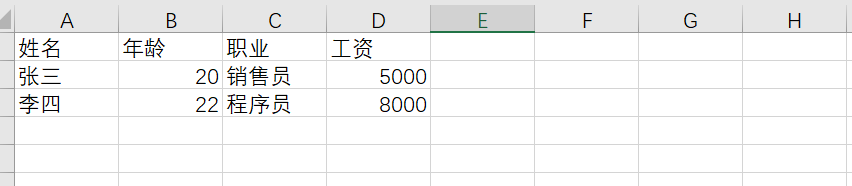

相对路径
- 从当前工作目录算起，如
"data1.txt"、"data/data1.txt" - 短、好写，但"当前目录"一变就找不到
- 课上练习、同目录小文件够用
文件与编码 · 打开与关闭 · 读写与文件指针 · CSV 文件操作 · 目录常用操作 · 文件操作综合应用 · AI 语料文件（7 个知识模块 + 39 段实测代码 + 21 张插图 + 12 个动态演示图 + 6 个交互面板）
Lesson Overview · 从"程序一关数据就没了"到"数据能留下来、还能给别人用"
前面五章写的程序，数据都在内存里：变量、列表、字典、对象，程序一结束就全部蒸发。想让数据活下来，只有一条路——把它写到磁盘上的文件里。这一章就干这件事：先弄清"文件到底是什么"（一堆字节，加上一套编码规则），再学会用 open() 打开它、读它、写它、关掉它，然后处理最常见的表格数据格式 CSV，最后学会在目录里翻找文件、批量处理。
这一章还有一个特殊地位：它是后面所有数据分析的地基。第 7 章 NumPy、第 8 章 Pandas、第 9 章可视化，第一步永远是"把数据从文件里读进来"。文件读不进来，后面全白搭。
'你好' 在 UTF-8 下是几个字节；② 会用 open(file, mode, encoding) 的三种主要模式打开文件，知道 w 会清空、a 会追加；③ 会用 read / readline / readlines / for line in f 四种方式读文件，会用 write / writelines 写文件；④ 理解文件指针，会用 tell() 和 seek()；⑤ 推荐一律用 with，不再手动 close()；⑥ 会用 csv 标准库读写 CSV 文件，记得写 newline=''；⑦ 会用 os 模块的 getcwd / listdir / mkdir / rmdir / scandir 和 os.path 系列，能写一个递归遍历目录树的函数；⑧ 能把"读数据 — 处理 — 写结果"串成一个完整程序。
点击节点可跳转到对应讲解位置，点击三角可展开 / 收起分支。
open(路径, 模式, 编码)，模式 r 读、w 清空重写、a 追加；③ 一律用 with open(...) as f:，代码块一结束文件自动关——这是唯一推荐的写法。close()（或没用 with），内容还在缓冲区，文件里居然是空的；② Windows 上写 CSV 不加 newline=''，每行之间凭空多一个空行；③ 用 gbk 打开一个 utf-8 的文件（或反过来），中文字符变成一堆乱码或直接 UnicodeDecodeError。这三条本章都会逐个用代码演示出来。文件是什么 · 文本文件与二进制文件 · 常见格式与对应库 · 字符编码 UTF-8 / GBK / ASCII
前五章写的程序有一个共同点：数据都放在变量里。变量活在内存中，程序一结束、电脑一关机，内存里的东西就没了。想让数据"活到下一次运行"，只有一条路——写进文件。这一章从这个最简单的动作开始，然后把"打开、读写、关闭"三件事一件件讲透。
课件给的定义是：文件是数据的抽象和集合，是数据持久存储的重要方式。这句话可以拆成两个关键词来理解——抽象：磁盘上那堆 0 和 1 怎么排我们不用管，Python 给它们包了一层统一的东西叫"文件"，你只管按名字打开、按内容读写；持久：数据从内存搬到磁盘，程序退出、机器重启都还在，而且能被别的程序再读出来（今天写的 csv，明天 Excel 和 pandas 都能打开）。
所以"用程序操作文件"永远是三步：① 打开文件——指定路径和名字，拿到一个文件对象；② 通过这个对象读写内容；③ 关闭文件——把缓冲区里的内容真正保存到磁盘。后面两个模块，就是把这三步拆开讲。
open() 是去仓库取货，close() 是把货放回仓库——中间那次"读写"就是干活。磁盘上的文件千千万，按"数据怎么组织"只分两类。这个区分非常实用：决定了你用什么模式打开、看到的到底是什么类型的数据。下面的表把两类文件放在一起对照。
| 对比项 | 文本文件 | 二进制文件 |
|---|---|---|
| 存的是什么 | 字符串（str） | 字节串（bytes） |
| 编码 | 采用单一特定编码（如 UTF-8） | 没有"文本编码"概念，要按各自的格式解码 |
| 行的概念 | 由若干文本行组成，每行以换行符 \n 结尾 | 没有行，只有一长串字节 |
| 常见扩展名 | .txt .csv .py .json .md | .jpg .png .mp3 .mp4 .exe .docx |
| 记事本能看懂吗 | 能直接查看、编辑 | 看不懂（乱码），甚至打不开 |
| 打开方式 | open(path, 'r', encoding='utf-8') | open(path, 'rb') |
课件里那句"二进制文件需要进行解码之后才能正确显示、修改或执行"说的就是这个意思：一张 jpg 里没有"字符串"，只有按 JPEG 格式排好的字节；想看到图，得让图片查看器按 JPEG 规则去解码。而 txt 里存的就是文字本身，只要知道它用的是哪种编码，就能翻译回人能读的字符。下图把两类文件的"内部长相"画出来。
光看图不够直观。下面这段代码做一件事：把同一段中文写进文件，先用文本模式读它，再用二进制模式（'rb'）读它，看同一个文件给出的两种答案。
import os, tempfile
with tempfile.TemporaryDirectory() as td:
path = os.path.join(td, 'data1.txt')
with open(path, 'w', encoding='utf-8') as f:
f.write('你好')
with open(path, encoding='utf-8') as f:
print('文本模式读到：', repr(f.read()))
with open(path, 'rb') as f:
raw = f.read()
print('二进制模式读到：', raw)
print('字节数：', len(raw))
文本模式读到： '你好' 二进制模式读到： b'\xe4\xbd\xa0\xe5\xa5\xbd' 字节数： 6
'你好' 是 str，len 是 2（两个字符）；② 二进制模式读到的 b'\xe4\xbd\xa0\xe5\xa5\xbd' 是 bytes，每个 \xe4 这样的是一个字节——"你好"两个字在 UTF-8 下占 6 个字节（一个汉字 3 字节）。同一个文件，模式不同，交到你手里的东西就不同。\n 分行、记事本能看懂）和二进制文件（存字节串、要按格式解码、记事本看不懂）。文本用 'r' 打开，二进制用 'rb' 打开。课件第 4 页那张表想说明一件事：文件格式不同，处理它的库就不同。txt 最省事，Python 内置的 open() 就能读写；到了 Excel、Word，就得请专门的库出马。下表按课件内容重绘，加了一列"本课用不用"。
| 文件类型 | 扩展名 | 需要的 Python 库 | 本课用不用 |
|---|---|---|---|
| 纯文本 | .txt | 不需要其它库，内置 open() 就够 | 重点 |
| CSV 表格 | .csv | csv（标准库）、pandas | 重点 |
| Excel 工作簿 | .xls / .xlsx | xlrd、xlwt、openpyxl、pandas | 后续课程 |
| Word 文档 | .docx | docx（python-docx） | 后续课程 |
| JSON 数据 | .json | json（标准库） | 下一模块 |
| MySQL 数据库 | —（不是文件） | pymysql | 后续课程 |
pip install），本课不装。它们背后的读写思路完全一样——先打开，再读或写，最后关闭。把 txt 和 csv 这两个"纯文本"玩熟了，以后换格式只是换库名。.txt）的打开、读写、关闭彻底搞清楚，再学 CSV（它本质就是"用逗号排版的纯文本"），最后用 os 模块管目录。一路都只用标准库。open()，csv 用标准库 csv 或 pandas，Excel 用 xlrd / xlwt / openpyxl / pandas，Word 用 docx，JSON 用 json，MySQL 用 pymysql。但"打开 → 读写 → 关闭"的思路是通用的。计算机里只有 0 和 1，也就是字节；而我们写进程序的是字符（"你"、"好"、"A"）。把字符变成字节叫 编码 encode，把字节变回字符叫 解码 decode。同一个字符，用不同编码翻译出来的字节可能完全不同——这就是编码问题的根源。
常用编码就三种，记住它们的差别：
| 编码 | 一个英文字母 / 数字 | 一个汉字 | 说明 |
|---|---|---|---|
ASCII | 1 字节 | 编不了（报错） | 只覆盖 128 个西文字符，早期标准 |
UTF-8 | 1 字节 | 3 字节 | 国际通用，文件与网页的默认选择 |
GBK | 1 字节 | 2 字节 | 中文 Windows 的老编码，国内旧文件常见 |
s = '你好'
b8 = s.encode('utf-8')
bg = s.encode('gbk')
print('字符数：', len(s))
print('UTF-8 编码：', b8)
print('UTF-8 字节数：', len(b8))
print('GBK 编码：', bg)
print('GBK 字节数：', len(bg))
print('解码回字符：', b8.decode('utf-8'), bg.decode('gbk'))
print('字母 A 的 ASCII 字节：', 'A'.encode('ascii'))
字符数： 2 UTF-8 编码： b'\xe4\xbd\xa0\xe5\xa5\xbd' UTF-8 字节数： 6 GBK 编码： b'\xc4\xe3\xba\xc3' GBK 字节数： 4 解码回字符： 你好 你好 字母 A 的 ASCII 字节： b'A'
编码用错只有两种下场，代码都会直接告诉你。先看解码用错：把 GBK 的字节当成 UTF-8 去解。
gbk_data = '你好'.encode('gbk')
utf8_data = '你好'.encode('utf-8')
print('GBK 字节：', gbk_data)
print('UTF-8 字节：', utf8_data)
print('用 GBK 解码自己：', gbk_data.decode('gbk'))
print('用 UTF-8 去解 GBK 的字节：', gbk_data.decode('utf-8'))
GBK 字节： b'\xc4\xe3\xba\xc3'
UTF-8 字节： b'\xe4\xbd\xa0\xe5\xa5\xbd'
用 GBK 解码自己： 你好
Traceback (most recent call last):
File "<pyshell>", line 7, in <module>
print('用 UTF-8 去解 GBK 的字节：', gbk_data.decode('utf-8'))
UnicodeDecodeError: 'utf-8' codec can't decode byte 0xc4 in position 0: invalid continuation byte
再看编码用错：ASCII 只能表示 128 个西文字符，拿它编汉字必然失败。
print('Hello 的 ASCII 字节：', 'Hello'.encode('ascii'))
print('数字与符号：', '2026, ok!'.encode('ascii'))
print('英文标点也行：', '!?,.:;'.encode('ascii'))
print('一共几个字节：', len('Hello'.encode('ascii')))
print('下面换中文——')
print('你好'.encode('ascii'))
Hello 的 ASCII 字节： b'Hello'
数字与符号： b'2026, ok!'
英文标点也行： b'!?,.:;'
一共几个字节： 5
下面换中文——
Traceback (most recent call last):
File "<pyshell>", line 6, in <module>
print('你好'.encode('ascii'))
UnicodeEncodeError: 'ascii' codec can't encode characters in position 0-1: ordinal not in range(128)
encoding='utf-8'，读的时候也要写 encoding='utf-8'；如果文件是别人用 GBK 存的（比如从 Excel 导出的中文 csv），读的时候就必须写 encoding='gbk'。Windows 上 Python 的"默认编码"不一定是 UTF-8，所以永远显式写出 encoding，别偷懒。UnicodeDecodeError / UnicodeEncodeError，所以读写文件时显式指定 encoding。open() 三个参数 · r / w / a / x / b / t / + 打开模式 · 路径与转义 · close() 与 with
文件操作的第①步和第③步都在这个模块里。别小看"打开"——模式选错，文件可能被清空；别小看"关闭"——忘了 close()，写进去的内容可能还在缓冲区里没落盘。这一节把这两个动作的坑一次讲全。
open(file, mode, encoding) 的功能是打开文件并返回一个文件对象。三个参数各自管一件事，缺省值记牢：mode 默认是 'rt'（只读文本），encoding 在 Windows 上不建议依赖默认值。
open() 的三个参数与返回值：file 说"打开谁"，mode 说"怎么开"，encoding 说"用哪本字典翻译"如果指定的文件不存在、访问权限不够、磁盘空间不足或者别的原因导致创建文件对象失败，open() 会直接抛出异常。所以打开文件这件事，最好放在 try 里，或者至少心里有数——下面这段代码就是"只读打开一个不存在的文件"的真实下场。
import os
name = 'chpt6_not_exist.txt'
print('这个文件存在吗？', os.path.exists(name))
f = open(name, encoding='utf-8')
print(f.read())
这个文件存在吗？ False
Traceback (most recent call last):
File "<pyshell>", line 5, in <module>
f = open(name, encoding='utf-8')
FileNotFoundError: [Errno 2] No such file or directory: 'chpt6_not_exist.txt'
chpt6_not_exist.txt"。相对路径是相对程序运行时所在的目录，不是相对你写代码的那个文件。找不到文件时，先 os.getcwd() 看清当前在哪，再决定用相对路径还是完整路径。open(file, mode, encoding) 打开文件并返回文件对象。file 是路径 + 文件名（同目录只写文件名）；mode 默认 'rt'；encoding 常用 UTF-8 / GBK。文件打不开（不存在、没权限、磁盘满）→ 抛异常，其中最常见的是 FileNotFoundError。模式决定三件事：能不能读、能不能写、文件不存在时怎么办，还有一件容易忽略的——指针一开始在哪。下表按课件重绘，最后两列是考试和实操最常考的地方。
| 模式 | 含义 | 文件不存在时 | 已有内容 | 指针初始位置 |
|---|---|---|---|---|
r | 只读（默认） | 抛 FileNotFoundError | 保留 | 文件开头 |
w | 只写 | 新建文件 | 清空重写 | 文件开头 |
a | 追加写 | 新建文件 | 保留，写在末尾 | 文件末尾 |
x | 独占新建 | 新建文件 | 抛 FileExistsError | 文件开头 |
t | 文本模式（默认） | 与 r / w / a 组合，如 'rt' | — | 按字符计 |
b | 二进制模式 | 与 r / w / a 组合，如 'rb' | — | 按字节计 |
+ | 可读可写 | 与 r / w / a 组合，如 'r+' | — | 文件开头 |
光看表格记不住，跑两段代码就明白了。第一段演示 w 的"先清空再写"：同一个文件，第二次用 'w' 打开，第一次写的东西就没了。
import os, tempfile
with tempfile.TemporaryDirectory() as td:
path = os.path.join(td, 'data1.txt')
with open(path, 'w', encoding='utf-8') as f:
f.write('第一版：Tom, Linda, Jack')
with open(path, encoding='utf-8') as f:
print('第一次写完：', f.read())
with open(path, 'w', encoding='utf-8') as f:
f.write('第二版')
with open(path, encoding='utf-8') as f:
print('w 再打开后：', f.read())
第一次写完： 第一版：Tom, Linda, Jack w 再打开后： 第二版
第二段是 a 的"接着末尾写"。写日志、连续追加数据全靠它——同样一句 'a'，不会碰原来的一行字。
import os, tempfile
with tempfile.TemporaryDirectory() as td:
path = os.path.join(td, 'log.txt')
with open(path, 'w', encoding='utf-8') as f:
f.write('第 1 行：程序启动\n')
with open(path, 'a', encoding='utf-8') as f:
f.write('第 2 行：开始处理\n')
with open(path, 'a', encoding='utf-8') as f:
f.write('第 3 行：处理完成\n')
with open(path, encoding='utf-8') as f:
print(f.read())
第 1 行：程序启动 第 2 行：开始处理 第 3 行：处理完成
w 是本章最"危险"的一个字母。它一打开文件就把内容清空，写不写都先清。所以：只想读就用 r，想在末尾接着写就用 a，只有确实要整个重写时才用 w。另外 b 与 t 不能同时出现在模式里（'rbt' 是错的），二进制模式也别写 encoding。r 只读、文件不在就报错；w 清空重写、文件不在就新建；a 从末尾追加、文件不在就新建；x 独占新建、已存在就报错；t 是文本（默认）、b 是二进制、+ 表示可读可写。模式不同，指针初始位置和文件内容都会不同。r"" 原始字符串Windows 的路径分隔符是反斜杠 \，而 Python 字符串里 \ 是转义符（\n 是换行、\t 是制表符）。所以 "D:\test.txt" 里的 \t 会被当成制表符，路径就错了。解决方式有两种：写两个反斜杠 "D:\\test.txt"，或者在字符串前加 r 变成原始字符串 r"D:\test.txt"。更稳的做法是用 os.path.join() 拼路径，让 Python 自己处理分隔符。
import os
print('反斜杠要转义：', 'chpt6\\data\\test.txt')
print('原始字符串写法：', r'chpt6\data\test.txt')
print('os.path.join：', os.path.join('chpt6', 'data', 'test.txt'))
print('文件名：', os.path.basename('chpt6/data/data1.txt'))
print('扩展名：', os.path.splitext('data1.txt'))
反斜杠要转义： chpt6\data\test.txt
原始字符串写法： chpt6\data\test.txt
os.path.join： chpt6\data\test.txt
文件名： data1.txt
扩展名： ('data1', '.txt')
"data1.txt"、"data/data1.txt"r"D:\mypython\data1.txt"os.path.join() 拼path = os.path.join('chpt6', 'data', 'data1.txt')。它不用你操心该写 \ 还是 /，换到 Linux / macOS 上也照样能跑。临时目录里的路径尤其要用它拼。\ 是转义符，要么写成 \\，要么用原始字符串 r"D:\test.txt"。相对路径从当前工作目录算起，绝对路径从盘符算起；拼接路径推荐 os.path.join()，别手工加反斜杠。为什么一定要 close()？因为 write() 写的内容不是立刻落到磁盘，而是先放在缓冲区里攒着，close() 才把缓冲区刷到磁盘并释放文件句柄。程序若在 close() 之前异常退出，缓冲区的内容就可能丢。
手动 open() + close() 的问题是：中间一旦报错，close() 那一行就被跳过了。Python 的 with 语句（上下文管理语句）解决了这件事：不论什么原因跳出 with 代码块，都保证文件被正确关闭。
with 的四步生命周期——第④步的关闭是 Python 替你做的，发生异常也不跳过import os, tempfile
with tempfile.TemporaryDirectory() as td:
path = os.path.join(td, 'test.txt')
with open(path, 'w', encoding='utf-8') as f:
f.write('I am Linda.')
print('代码块内 f.closed =', f.closed)
print('代码块外 f.closed =', f.closed)
f = open(path, encoding='utf-8')
print('手动 open 后 f.closed =', f.closed)
f.close()
print('手动 close 后 f.closed =', f.closed)
代码块内 f.closed = False 代码块外 f.closed = True 手动 open 后 f.closed = False 手动 close 后 f.closed = True
close() 会怎样？① 缓冲区里的内容可能没落盘，程序崩了数据就丢了；② 文件句柄被占着，Windows 上再想删、改名这个文件会失败；③ 打开的文件一多，句柄耗尽，后面直接打不开新文件。所以——能用 with 就别手动 open/close，这是本课要求的标准写法。close() 才把缓冲区刷到磁盘并释放文件；手动 open/close 遇到异常会漏掉 close。用 with open(...) as f: 写，离开代码块自动关闭，异常也关，是推荐写法。read / readline / readlines / for · write / writelines · tell() 与 seek() · 例 6-1 商品类别码统计 · 方法总表
文件打开了，接下来就是核心动作——读和写。读写时会有一个看不见的"光标"在文件里移动，叫文件指针。读到哪里、写到哪里、为什么第二次读是空的，答案全在指针上。这个模块把四种读法、两种写法、指针的两个方法（tell() / seek()）一次讲清楚，最后完整做一节课件例 6-1。
读文件有四种常用读法，区别只有两个：一次拿多少、拿回来的是什么类型。而它们都会让指针往后走——读过的内容不会再读第二遍。
| 方法 | 返回什么 | 读完指针在哪 | 适合什么场景 |
|---|---|---|---|
read() | 整个文件，一个字符串 | 文件末尾 | 小文件，一次读完 |
read(size) | 指定 size 个字符 | 往后移 size | 分段读，边读边处理 |
readline() | 一行，一个字符串（含 \n） | 下一行开头 | 按行处理 |
readlines() | 每行一个字符串拼成的列表 | 文件末尾 | 小文件，要按行存起来 |
for line in f | 每次循环一行 | 随循环逐行前进 | 大文件首选，最省内存 |
import os, tempfile
with tempfile.TemporaryDirectory() as td:
path = os.path.join(td, 'data1.txt')
with open(path, 'w', encoding='utf-8') as f:
f.write('第一行\n第二行\n第三行\n')
with open(path, encoding='utf-8') as f:
print('read(5)：', repr(f.read(5)))
with open(path, encoding='utf-8') as f:
print('readline()：', repr(f.readline()))
with open(path, encoding='utf-8') as f:
print('readlines()：', f.readlines())
with open(path, encoding='utf-8') as f:
for line in f:
print('for 循环：', repr(line))
read(5)： '第一行\n第' readline()： '第一行\n' readlines()： ['第一行\n', '第二行\n', '第三行\n'] for 循环： '第一行\n' for 循环： '第二行\n' for 循环： '第三行\n'
\n：readline() 和 for line in f 拿到的字符串包含换行符，直接 print() 会多出一个空行。处理数据前先 line.strip() 去掉首尾空白（空格、\n、\r 都去），再做 split()、int() 这类操作。比较"这一行是不是空的"也用它。read() 读全部成一个字符串、readline() 读一行、readlines() 读所有行成一个列表、for line in f 逐行遍历（大文件首选，最省内存）。四种读法都会移动指针，每行末尾带 \n，处理前用 .strip() 去掉。写文件两个方法，都很简单，但有一个坑必须记住：write() 不会自动换行，writelines() 也不会。想让文件"一行一条"，得自己把 '\n' 拼进去。
import os, tempfile
with tempfile.TemporaryDirectory() as td:
path = os.path.join(td, 'data2.txt')
with open(path, 'w', encoding='utf-8') as f:
n = f.write('Tom')
print('write 返回的字符数：', n)
with open(path, 'a', encoding='utf-8') as f:
f.writelines(['Linda', 'Jack'])
with open(path, encoding='utf-8') as f:
print('writelines 后：', repr(f.read()))
with open(path, 'a', encoding='utf-8') as f:
f.writelines([x + '\n' for x in ['Bob', 'Amy']])
with open(path, encoding='utf-8') as f:
print('自己拼换行后：', repr(f.read()))
write 返回的字符数： 3 writelines 后： 'TomLindaJack' 自己拼换行后： 'TomLindaJackBob\nAmy\n'
f.writelines(['Tom', 'Linda', 'Jack']) # 文件里是：TomLindaJack
f.writelines([x + '\n' for x in ['Tom', 'Linda', 'Jack']]) # 文件里是： # Tom # Linda # Jack
write() 的参数必须是字符串，写数字要先 str() 转换，否则报 TypeError；② 用 'w' 模式写之前，文件原有的内容已经没了——想"接着写"请用 'a'。write(s) 写入一个字符串并返回写入的字符数；writelines(list) 写入一组字符串、返回 None，但不会自动加换行，要自己拼 '\n'。写数字前先 str()。文件对象内部有一个指针，指向"下一次读或写的位置"。tell() 告诉你它在哪，seek(offset, whence) 把它挪到别处。whence 有三个取值：0 从文件开头算（默认）、1 从当前位置算、2 从文件末尾算。下面这张图是课件里 TomLinda 那段交互的完整复盘。
read 往前推、tell 读数、seek 拨回去import os, tempfile
with tempfile.TemporaryDirectory() as td:
path = os.path.join(td, 'test1.txt')
with open(path, 'w', encoding='utf-8') as f:
f.write('Tom')
f.write('Linda')
with open(path, encoding='utf-8') as f:
print('read(3) →', f.read(3), '；tell() →', f.tell())
print('read(5) →', f.read(5), '；tell() →', f.tell())
f.seek(3, 0)
print('seek(3, 0) 后 tell() →', f.tell())
print('再 read(5) →', f.read(5))
read(3) → Tom ；tell() → 3 read(5) → Linda ；tell() → 8 seek(3, 0) 后 tell() → 3 再 read(5) → Linda
指针还有一个限制：文本模式下只能 seek 到"绝对位置"（whence=0），因为一个汉字占几个字节要看编码，Python 没法从"当前位置"或"文件末尾"可靠地按字符偏移。所以下面这种写法会直接报错。
import os, tempfile
with tempfile.TemporaryDirectory() as td:
path = os.path.join(td, 'test1.txt')
with open(path, 'w', encoding='utf-8') as f:
f.write('TomLinda')
with open(path, encoding='utf-8') as f:
f.seek(2, 1)
print(f.read())
Traceback (most recent call last):
File "<pyshell>", line 8, in <module>
f.seek(2, 1)
io.UnsupportedOperation: can't do nonzero cur-relative seeks
whence=1/2 能用？用二进制模式（'rb'）打开时，字节就是字节，三种 whence 都支持；文本模式请老老实实用 seek(n, 0)。另外 seek 可以往前也可以往后，tell() 返回的是下一次读写的位置（不是刚读完的那个字符的位置）。tell() 返回当前指针位置；seek(offset, whence) 移动指针，whence 取 0 文件头（默认）、1 当前位置、2 文件末尾。文本模式只能用 whence=0，否则抛 UnsupportedOperation。下面这个例子是课件例 6-1 的完整复现。题目是：从文件 data1.txt 中读取一组商品编号数据（数据之间以英文逗号分隔），取出各编号的前 2 位（表示商品的类别码），然后去除重复的类别码，并按类别码排序。思路一共五步：读全部 → 按逗号切 → 每个编号取前 2 位 → 用集合去重 → 排序。
1001,1002,2001 2002,1001,3001
import os, tempfile
with tempfile.TemporaryDirectory() as td:
path = os.path.join(td, 'data1.txt')
with open(path, 'w', encoding='utf-8') as f:
f.write('1001,1002,2001\n2002,1001,3001')
with open(path, 'r', encoding='utf-8') as fr:
codes = fr.read() # 读取数据，返回一个字符串
print(codes)
alist = codes.split(',') # 返回一个字符串列表
print(alist)
codes = [c[0:2] for c in alist] # 每个编号取前 2 位
print(codes)
uni_codes = set(codes) # 去除重复的类别码
uni_codes = sorted(list(uni_codes))
print(uni_codes)
1001,1002,2001 2002,1001,3001 ['1001', '1002', '2001\n2002', '1001', '3001'] ['10', '10', '20', '10', '30'] ['10', '20', '30']
data1.txt 已经存在，路径是 r"d:\mypython\data1.txt"；这里为了让你能直接点"运行"看到结果，先用 tempfile.TemporaryDirectory() 建一个临时目录，把 data1.txt 写进去再读——逻辑和课件一字不差，只是把"文件从哪来"补上了。真实作业里，你的数据文件放在代码同级目录即可。read() 得到字符串，split(',') 得到列表，列表推导式 c[0:2] 取类别码，set() 去重，sorted() 排序。set 是无序的，要得到排好序的结果必须再 sorted() 一次。把 open() 返回的文件对象 f 身上的方法归拢一下，读写文件 99% 的操作都在这张表里。下面的图按"读、写、定位、关闭"分成四类，表里再逐个说清返回值和注意事项。
| 方法 | 作用 | 返回值 | 备注 |
|---|---|---|---|
read(size=-1) | 读取全部内容或 size 个字符 | str | 指针会后移 |
readline() | 读取一行 | str（含 \n） | 到末尾返回 '' |
readlines() | 读取所有行 | list，每项一行 | 每项含 \n，小文件用 |
write(s) | 写入一个字符串 | 写入的字符数（int） | s 必须是 str |
writelines(list) | 写入一组字符串 | None | 不会自动加换行 |
seek(offset, whence=0) | 移动文件指针 | 新的位置（int） | 文本模式 whence 只能是 0 |
tell() | 返回当前指针位置 | int | 下一次读写的起点 |
close() | 关闭文件 | None | 关闭后不能再读写 |
tell / seek 是指针的仪表盘和方向盘；close 是保存并交还资源。真正写进文件的数据，要等 close()（或 with 结束）刷盘之后才算数。read / readline / readlines / for；写：write / writelines；定位：tell / seek；关闭：close（或 with）。记住返回值：read 系列给字符串或列表，write 给字符数，writelines 与 close 给 None。逗号分隔的纯文本表格 · csv.writer 写 · csv.reader 读 · next() 跳表头 · 例 6-4 写 user_info.csv · 例 6-5 求最高工资 · DictReader / DictWriter
前面三个模块，我们读写的一直是 .txt 纯文本：一行一句话，read() 回来就是一串字符。可现实里的数据往往长成表格的样子——姓名、年龄、职业、工资，一列一个字段，一行一条记录。要把它存成纯文本，最简单的办法就是在字段之间插一个分隔符；最自然的选择是逗号，于是就有了 CSV。
CSV 是 Comma-Separated Values（逗号分隔值）的缩写。它是一种以逗号作为分隔符的纯文本文件格式，通常用来存表格数据：每一行是一条记录，行内各字段用逗号隔开，同一份文件里每行的列数应当相同。txt / csv 这类文本文件可以直接用记事本打开看，也能用 Excel 打开看——同一份文件，两种看法。
先看 Excel 里的样子。下面这张图就是把 user_info.csv 拖进 Excel 之后的样子：表头是姓名、年龄、职业、工资，下面张三、李四两行数据。别被单元格骗了——文件本身并没有任何“表格结构”，它就是三行用逗号连起来的纯文本。

把“表格”还原成“文本”，就是下面这个文件卡片：记事本里看到的三行字，和 Excel 里看到的三行两列，指的是同一份数据。Excel 只是按逗号把它摆成了网格。
姓名,年龄,职业,工资 张三,20,销售员,5000 李四,22,程序员,8000
逗号当分隔符有个绕不开的麻烦：字段内容本身就带逗号怎么办？比如“销售, 北京”这种写法。CSV 的规矩是：如果字段里含逗号，就用一对英文双引号把它包起来，引号里面的逗号一律不算分隔符。下图把一行 CSV 拆开来看。
明白了“逗号拆分”的规矩，就该知道手工 split(',') 不靠谱。Python 标准库自带 csv 模块，它就是专门按上面那套规矩干活的分隔器。下面的 demo 把两种拆法摆在一起对比：普通的 str.split 遇到带引号的字段会翻车，csv.reader 则拆得干干净净。
import csv, io
line = '张三,20,销售员,5000'
print('先用 str.split(",")：')
print(line.split(','))
print('字段个数：', len(line.split(',')))
line2 = '"销售, 北京",5000'
print('遇到带逗号的字段：', line2.split(','))
print('字段个数：', len(line2.split(',')))
print('csv.reader 读出来：', list(csv.reader(io.StringIO(line2))))
先用 str.split(",")：
['张三', '20', '销售员', '5000']
字段个数： 4
遇到带逗号的字段： ['"销售', ' 北京"', '5000']
字段个数： 3
csv.reader 读出来： [['销售, 北京', '5000']]
split(',')，交给 csv 模块。写 CSV 分两步：先用 open() 打开文件拿到文件对象，再用 csv.writer(fileobj) 在文件对象外面包一层 csv 写对象。这一层“壳”的作用只有一个：把列表转成一行逗号分隔的文本，然后交给文件对象写下去。
| 写法 | 作用 | 说明 |
|---|---|---|
csv.writer(f) | 创建 csv 写对象 | 参数是已打开的文件对象，不是文件名 |
writer.writerow(list) | 写一行 | 列表里一个元素 = 一个字段，返回写入的字符数 |
writer.writerows(rows) | 写多行 | 参数是“列表的列表”，一次写多行 |
看 demo：表头用 writerow() 写一行，数据用 writerows() 一次写完。写完之后再以文本方式读回来，你就能看到 csv 模块到底往文件里写了什么。
import csv, os, tempfile
rows = [
['课程', '班级', '人数'],
['Python', '数据1班', 45],
['Python', '数据2班', 48],
]
with tempfile.TemporaryDirectory() as td:
path = os.path.join(td, 'course.csv')
with open(path, 'w', encoding='utf-8', newline='') as f:
writer = csv.writer(f)
writer.writerow(rows[0]) # 写一行：表头
writer.writerows(rows[1:]) # 写多行：数据
with open(path, encoding='utf-8', newline='') as f:
print(f.read())
课程,班级,人数 Python,数据1班,45 Python,数据2班,48
注意 open(path, 'w', encoding='utf-8', newline='') 里的最后一个参数 newline=''：写 CSV 时必须写。这不是可有可无的装饰，漏了它，Windows 上的 CSV 会变成“每隔一行一个空行”。原因在下面这个 demo 里看得最清楚。
import csv, os, tempfile
rows = [['姓名', '年龄'], ['张三', 20], ['李四', 22]]
with tempfile.TemporaryDirectory() as td:
path = os.path.join(td, 'user_info.csv')
with open(path, 'w', encoding='utf-8') as f: # 漏写 newline=''
csv.writer(f).writerows(rows)
with open(path, encoding='utf-8', newline='') as f:
raw = f.read()
print('漏写时：', repr(raw))
print('再读回来：', list(csv.reader(raw.splitlines())))
with open(path, 'w', encoding='utf-8', newline='') as f: # 正确写法
csv.writer(f).writerows(rows)
with open(path, encoding='utf-8', newline='') as f:
raw = f.read()
print('写对后：', repr(raw))
print('再读回来：', list(csv.reader(raw.splitlines())))
漏写时： '姓名,年龄\r\r\n张三,20\r\r\n李四,22\r\r\n' 再读回来： [['姓名', '年龄'], [], ['张三', '20'], [], ['李四', '22'], []] 写对后： '姓名,年龄\r\n张三,20\r\n李四,22\r\n' 再读回来： [['姓名', '年龄'], ['张三', '20'], ['李四', '22']]
\r\n（回车 + 换行两个字符）；而 Python 在 Windows 上以文本模式写文件时，还会把其中的 \n 再翻译成 \r\n。两个一叠加，行尾就从 \r\n 变成了 \r\r\n——用记事本、Excel 或普通文本模式打开时，一个单独的 \r 也算一次换行，于是每两行之间多出一个空行；csv.reader 读到空行就返回 []（就是 demo 里“再读回来”多出来的那些方括号）。加上 newline='' 就是告诉 open()：别做换行符翻译，行尾交给 csv 自己管。机房用的是 Windows，这个参数一定要写。open(..., 'w', newline='') 拿到文件对象 → csv.writer(f) 包一层 → writerow() / writerows() 写行。少写 newline=''，Windows 上就会多出空行。读是写的逆过程，但要注意一个关键差别：写进去的是列表，读出来的却全是字符串。csv.reader(iterable) 返回一个可迭代对象，每迭代一次给你一行，这一行是一个字符串列表——哪怕文件里写的是 20、5000 这样的数字，读回来也是 '20'、'5000'。
下图把“文件对象”和“csv 读写对象”的关系画清楚：文件对象负责行，csv 读写对象负责把一行文本和一行列表互相转换。
open() 开始csv.reader 读出来的第一行通常是表头（姓名、年龄、职业、工资）。表头不是数据，后面算工资时得把它跳过。跳过的方法不是“判断一下再 continue”，而是在循环之前先调用一次 next(reader)，把第一行取走——之后 for row in reader 就是从第二条记录开始。
import csv, os, tempfile
with tempfile.TemporaryDirectory() as td:
path = os.path.join(td, 'user_info.csv')
with open(path, 'w', encoding='utf-8', newline='') as f:
writer = csv.writer(f)
writer.writerow(['姓名', '年龄', '职业', '工资'])
writer.writerow(['张三', 20, '销售员', 5000])
writer.writerow(['李四', 22, '程序员', 8000])
with open(path, encoding='utf-8', newline='') as f:
reader = csv.reader(f)
header = next(reader) # 先取走表头
print('表头（跳过）：', header)
for row in reader:
print(row, '| 类型：', type(row).__name__)
print('字段都是字符串：', [type(x).__name__ for x in row])
表头（跳过）： ['姓名', '年龄', '职业', '工资'] ['张三', '20', '销售员', '5000'] | 类型： list ['李四', '22', '程序员', '8000'] | 类型： list 字段都是字符串： ['str', 'str', 'str', 'str']
int() / float() 转换；③ 表头用 next(reader) 跳过，不要在循环里判断“第一行不是数据”。csv.reader(f) 逐行迭代，每行给一个字符串列表；next(reader) 把表头取走，循环就从数据行开始。数字字段读回来是字符串，别忘了转换。这两个例题是本节的核心，数据就用课件里的那两行：张三（20 岁，销售员，5000）和李四（22 岁，程序员，8000）。课件的代码把文件写在 d:\mypython\ 下，这里为了不污染你的磁盘，改用 tempfile.TemporaryDirectory() 建一个临时目录，代码结构一行都没变。
先把三行数据（含表头）放在列表里，然后 csv.writer 逐行写进去；紧接着再打开同一个文件读回来，确认写进去的内容。这一步很关键——写完立刻读回来看一眼，比在脑子里推断可靠得多。
import csv, os, tempfile
data = [['姓名', '年龄', '职业', '工资'],
['张三', 20, '销售员', 5000],
['李四', 22, '程序员', 8000]]
with tempfile.TemporaryDirectory() as td:
path = os.path.join(td, 'user_info.csv')
# 例 6-4：把列表中的用户信息写入 user_info.csv
with open(path, 'w', encoding='utf-8', newline='') as f:
csv_writer = csv.writer(f)
for row in data:
csv_writer.writerow(row) # 逐行写入列表内容
# 再把文件读回来，确认写进去的是什么
with open(path, 'r', encoding='utf-8', newline='') as f:
csv_reader = csv.reader(f)
for row in csv_reader:
print(row)
['姓名', '年龄', '职业', '工资'] ['张三', '20', '销售员', '5000'] ['李四', '22', '程序员', '8000']
读的时候要处理三件事：跳表头（next(csv_reader)）、取工资列（row[3]，第 4 列，下标从 0 开始）、转成整数（int(row[3])）。工资收集到 salary 列表里，最后 max(salary) 求最大值。
import csv, os, tempfile
with tempfile.TemporaryDirectory() as td:
path = os.path.join(td, 'user_info.csv')
with open(path, 'w', encoding='utf-8', newline='') as f:
csv.writer(f).writerows([['姓名', '年龄', '职业', '工资'],
['张三', 20, '销售员', 5000],
['李四', 22, '程序员', 8000]])
# 例 6-5：读 user_info.csv，求工资的最大值
salary = []
with open(path, 'r', encoding='utf-8', newline='') as f:
csv_reader = csv.reader(f)
header_row = next(csv_reader) # 跳过表头
for row in csv_reader:
salary.append(int(row[3])) # 第 4 列是工资
print(salary)
print('最高工资为：' + str(max(salary)))
[5000, 8000] 最高工资为：8000
header_row = next(csv_reader) 这个赋值其实没用到 header_row，它的副作用才是重点：next() 把表头那一行消耗掉了。如果省掉这一句，int('工资') 会直接抛 ValueError。另外课件里的路径写死在 d:\mypython\，也没显式写 encoding 和 newline；这里换成临时目录并按前两节的规范补齐，读写逻辑与课件完全一致。csv.writer 把“列表的列表”逐行写成 CSV；例 6-5 用 next() 跳表头、int(row[3]) 把字符串工资转成整数、max() 求最高工资。这两步合起来，就是“存进去、算出来”的完整闭环。csv.reader 给的是列表，取字段只能靠列号（row[0]、row[3]）。一旦 CSV 的列顺序变了，所有下标都得跟着改，很容易错位。所以 csv 模块还提供了按表头名取字段的版本：csv.DictReader 把每行变成字典，csv.DictWriter 按 fieldnames 写字典。
row = ['张三', '20', '销售员', '5000'] row[0] # '张三' row[3] # '5000' # 列顺序一变，下标全得改
row = {'姓名': '张三', '年龄': '20',
'职业': '销售员', '工资': '5000'}
row['姓名'] # '张三'
row['工资'] # '5000'
# 列顺序变了也不怕
看 demo：用 DictWriter(f, fieldnames=['姓名', '职业', '工资']) 写，字典的键和 fieldnames 对上就写、对不上就报错；读的时候 DictReader 自动把表头当年键，每行给一个字典。
import csv, os, tempfile
with tempfile.TemporaryDirectory() as td:
path = os.path.join(td, 'user_info.csv')
with open(path, 'w', encoding='utf-8', newline='') as f:
writer = csv.DictWriter(f, fieldnames=['姓名', '职业', '工资'])
writer.writeheader()
writer.writerow({'姓名': '张三', '职业': '销售员', '工资': 5000})
writer.writerow({'姓名': '李四', '职业': '程序员', '工资': 8000})
with open(path, encoding='utf-8', newline='') as f:
for row in csv.DictReader(f):
print(row['姓名'], row['职业'], row['工资'],
'| 键：', list(row.keys()))
张三 销售员 5000 | 键： ['姓名', '职业', '工资'] 李四 程序员 8000 | 键： ['姓名', '职业', '工资']
DictReader / DictWriter，靠 fieldnames 对齐字段名，比记 row[3] 稳。os 模块目录函数 · getcwd / chdir / listdir · mkdir vs makedirs · rmdir 只删空目录 · scandir 与 DirEntry · os.path 判断与拆分 · 递归遍历目录树
文件操作处理的是“一个文件”，目录操作处理的是“一堆文件放在哪”。Python 内置的 os 模块提供了目录与路径的常用方法：看当前在哪、列目录内容、建目录、删目录、判断是文件还是目录、把路径拼起来或拆开。这些函数是后面“遍历整个数据集目录”“批量改名”这类任务的地基。
先把这一节要用的函数摆成一张表。不用背，写代码时回来查。要注意两个容易混淆的地方：listdir 和 scandir 都能列目录，但返回的东西完全不一样；mkdir 和 makedirs 只差几个字母，能建的层级却差很多。
| 函数 | 作用 | 返回 / 要点 |
|---|---|---|
os.listdir(path) | 列出目录下的所有名字 | 字符串列表；只有名字，不带路径；顺序不保证 |
os.scandir(path) | 列出目录项 | DirEntry 可迭代对象，每项有 name / path / is_file() / is_dir() |
os.mkdir(path) | 创建一级目录 | 父目录必须已存在；目录已存在报 FileExistsError |
os.makedirs(path) | 创建多级目录 | 缺的父目录自动补齐；已存在时加 exist_ok=True 不报错 |
os.rmdir(path) | 删除目录 | 只能删空目录；非空报 OSError，要连内容删用 shutil.rmtree() |
os.getcwd() | 取当前工作目录 | 返回绝对路径字符串 |
os.chdir(path) | 切换当前工作目录 | 之后的相对路径都相对于它；切走记得切回 |
os.path.isdir(path) | 判断是不是目录 | 返回 True / False；配套还有 isfile / exists |
os.path.join(a, b) | 拼接路径 | 按系统分隔符连接，自动处理该不该加 \ |
os.path.basename(path) / splitext(path) | 取文件名 / 拆后缀 | basename 给 'file1.txt'；splitext 给 ('file1', '.txt') |
listdir('.') 里的 '.' 表示当前目录，'..' 表示上一级。写 listdir(路径) 是“看别人家”，写 listdir('.') 是“看自己家”——不切换目录也能看，所以多数时候不需要 chdir。listdir / scandir / getcwd）、改（mkdir / makedirs / chdir）、删（rmdir）。再加一组判断与路径处理（os.path.*）。假设 Windows 的 D 盘上有一个叫 my_dir 的文件夹，结构如下图：里面有三个东西——file1.txt、file2.csv 两个文件，以及子目录 dir1；dir1 里又放着 file3.py、file4.py、file5.txt 三个文件。后面几节的 demo 都用这个结构，只是建在临时目录里。
getcwd() 问“我现在在哪个目录”，chdir(path) 说“我要换到那个目录去”，listdir(path) 列“那个目录里有什么”。三个函数配合起来，就是课件里那串操作：先 chdir 进 my_dir，再 getcwd 看位置，最后 listdir('.') 看内容。不切换目录也能列，直接写 listdir(r“D:\my_dir”) 就行。
import os, tempfile
with tempfile.TemporaryDirectory() as td:
work = os.path.join(td, 'my_dir')
os.makedirs(os.path.join(work, 'dir1'))
for name in ['file1.txt', 'file2.csv']:
with open(os.path.join(work, name), 'w', encoding='utf-8') as f:
f.write('x')
for name in ['file3.py', 'file4.py', 'file5.txt']:
with open(os.path.join(work, 'dir1', name), 'w', encoding='utf-8') as f:
f.write('x')
print('my_dir 里：', sorted(os.listdir(work)))
print('dir1 里：', sorted(os.listdir(os.path.join(work, 'dir1'))))
print('dir1 是目录吗：', os.path.isdir(os.path.join(work, 'dir1')))
my_dir 里： ['dir1', 'file1.txt', 'file2.csv'] dir1 里： ['file3.py', 'file4.py', 'file5.txt'] dir1 是目录吗： True
chdir 有一个坑：它改的是整个进程的工作目录。切进去忘了切回来，后面所有用相对路径的代码都会在错误的目录里找文件。所以演示 chdir 的标准写法是——先存旧目录，演示完再切回。
import os, tempfile
old = os.getcwd() # 先记住原来的工作目录
with tempfile.TemporaryDirectory() as td:
work = os.path.join(td, 'my_dir')
os.mkdir(work)
with open(os.path.join(work, 'file1.txt'), 'w', encoding='utf-8') as f:
f.write('hello')
os.chdir(work) # 切换当前工作目录
print('getcwd() 等于 abspath(".")：', os.getcwd() == os.path.abspath('.'))
print('当前目录里的内容：', os.listdir('.'))
os.chdir(old) # 演示完必须切回来
print('已经切回原来的目录：', os.getcwd() == old)
getcwd() 等于 abspath(".")： True
当前目录里的内容： ['file1.txt']
已经切回原来的目录： True
listdir(路径) 传路径解决的，就别 chdir；非得切，就学上面的写法：old = os.getcwd() → 干活 → os.chdir(old)。getcwd() 看位置、chdir() 换位置、listdir() 看内容。listdir('.') 看当前目录，listdir(路径) 看不切换也能看的目录。切换目录务必切回。建目录的两个函数只差三个字母，能力却差一截：mkdir 只能建一级，父目录必须已经存在；makedirs 可以一次建多级，缺的父目录它会一层一层补上。删目录的 rmdir 则有一条铁律：只能删空目录。
看 demo 验证：mkdir 建两级会在父目录缺失时抛 FileNotFoundError，同一个目录再建一次抛 FileExistsError；换成 makedirs，三级目录一次到位。
import os, tempfile
with tempfile.TemporaryDirectory() as td:
os.mkdir(os.path.join(td, 'a'))
print('mkdir 建一级 a：', os.path.isdir(os.path.join(td, 'a')))
try: # 父目录 b 不存在
os.mkdir(os.path.join(td, 'b', 'c'))
except FileNotFoundError as e:
print('mkdir 建 b/c 失败：', type(e).__name__)
os.makedirs(os.path.join(td, 'b', 'c', 'd'))
print('makedirs 建三级 b/c/d：',
os.path.isdir(os.path.join(td, 'b', 'c', 'd')))
try: # 同一目录再建一次
os.mkdir(os.path.join(td, 'a'))
except FileExistsError as e:
print('重复建 a 失败：', type(e).__name__)
mkdir 建一级 a： True mkdir 建 b/c 失败： FileNotFoundError makedirs 建三级 b/c/d： True 重复建 a 失败： FileExistsError
删目录时，先确认它是不是空的。空目录 rmdir 一下就没了；非空目录会抛 OSError，因为 Python 不敢替你决定“里面的东西要不要一起删”。正确姿势是：先把里面的东西删空，再删它自己。
import os, tempfile
with tempfile.TemporaryDirectory() as td:
d = os.path.join(td, 'test')
os.makedirs(os.path.join(d, 'sub'))
print('test 里现在有：', os.listdir(d))
try:
os.rmdir(d) # 非空目录
except OSError as e:
print('rmdir 删非空目录：', type(e).__name__)
print('提示里说到目录非空：', '空' in str(e) or 'empty' in str(e).lower())
os.rmdir(os.path.join(d, 'sub')) # 先删空子目录
os.rmdir(d) # 再删 test
print('test 还在吗：', os.path.exists(d))
test 里现在有： ['sub'] rmdir 删非空目录： OSError 提示里说到目录非空： True test 还在吗： False
rmdir 只能删空目录，误删的可能性很小；shutil.rmtree(路径) 会连里面的所有文件和子目录一起删掉，且不进回收站。初学阶段写 rmtree 前，先把路径 print 出来看三遍。mkdir 建一级、父目录必须在；makedirs 建多级、父目录自动补；rmdir 只删空目录，非空要 shutil.rmtree（删了就没了，小心）。前面 listdir 返回的是名字列表——想知道某个名字是文件还是目录，还得再调一次 os.path.isdir。os.scandir(path) 更省事：它返回一个由 DirEntry 对象组成的可迭代对象，每个 DirEntry 自带 name（名字）、path（拼好的路径）和 is_file() / is_dir() 两个判断方法。它不会一次性把所有信息读进内存，目录很大时也扛得住。
import os, tempfile
with tempfile.TemporaryDirectory() as td:
work = os.path.join(td, 'my_dir')
os.makedirs(os.path.join(work, 'dir1'))
for name in ['file1.txt', 'file2.csv']:
with open(os.path.join(work, name), 'w', encoding='utf-8') as f:
f.write('x')
entries = sorted(os.scandir(work), key=lambda e: e.name)
print('拿到的东西：', type(entries[0]).__name__)
for e in entries:
kind = '目录' if e.is_dir() else '文件'
print(e.name, '是', kind, '| is_file =', e.is_file())
拿到的东西： DirEntry dir1 是 目录 | is_file = False file1.txt 是 文件 | is_file = True file2.csv 是 文件 | is_file = True
除了 scandir，os.path 这组函数更常用：exists / isfile / isdir 做判断，join / basename / splitext 做路径的拼与拆。下图把它们的分工画开。
看 demo：join 用系统分隔符拼接（Windows 上是 \），不用自己写 + '\\'；basename / dirname 拆出文件名和目录；splitext 把主名和后缀分成两个字符串——注意 report.tar.gz 的“后缀”只算最后一个点后面的 .gz。
import os
print('join：', os.path.join('my_dir', 'dir1', 'file3.py'))
print('basename：', os.path.basename('my_dir/dir1/file1.txt'))
print('dirname：', os.path.dirname('my_dir/dir1/file1.txt'))
print('splitext：', os.path.splitext('file2.csv'))
print('splitext 拆多后缀：', os.path.splitext('report.tar.gz'))
print('exists 判断：', os.path.exists('不存在的文件.txt'))
join： my_dir\dir1\file3.py
basename： file1.txt
dirname： my_dir/dir1
splitext： ('file2', '.csv')
splitext 拆多后缀： ('report.tar', '.gz')
exists 判断： False
path + '\\' + name 的问题在于：Windows 用 \，Linux / macOS 用 /；多一个或少一个分隔符就会拼出 my_dir\\file1.txt 或 my_dirfile1.txt。用 os.path.join() 由系统来决定分隔符，跨平台也稳。scandir 返回 DirEntry 可迭代对象，自带 name / path / is_file() / is_dir()；os.path 负责判断（exists / isfile / isdir）和路径拼拆（join / basename / splitext）。把 5.2 的目录树真正“走一遍”，需要递归：处理一个目录时，如果里面还有子目录，就用同样的办法再进子目录处理，直到没有子目录为止。函数自己调用自己，天然适合这种“一层套一层”的结构。
下图是递归遍历的执行顺序：先处理 my_dir，发现 dir1 是目录，就钻进去把它的三个文件打印完，再退回来继续处理 file1.txt、file2.csv。这种“钻到底再回来”的顺序叫深度优先。
递归函数要写对两件事：基准情形（目录里没有子目录了，循环自然结束）和递归调用（遇到子目录，带着新的路径和更深的缩进再调自己）。缩进用 ' ' * depth 造出来，层级越深缩进越多，打印结果就是一棵树。
import os, tempfile
def walk(path, depth=0):
for name in sorted(os.listdir(path)):
full = os.path.join(path, name)
mark = '[目录]' if os.path.isdir(full) else '[文件]'
print(' ' * depth + mark + ' ' + name)
if os.path.isdir(full):
walk(full, depth + 1)
with tempfile.TemporaryDirectory() as td:
work = os.path.join(td, 'my_dir')
os.makedirs(os.path.join(work, 'dir1'))
for name in ['file1.txt', 'file2.csv']:
with open(os.path.join(work, name), 'w', encoding='utf-8') as f:
f.write('x')
for name in ['file3.py', 'file4.py', 'file5.txt']:
with open(os.path.join(work, 'dir1', name), 'w',
encoding='utf-8') as f:
f.write('x')
print('my_dir/')
walk(work, 1)
my_dir/
[目录] dir1
[文件] file3.py
[文件] file4.py
[文件] file5.txt
[文件] file1.txt
[文件] file2.csv
标准库 pathlib 是 Python 3.4 之后推荐的路径写法，把路径当对象而不是字符串：Path('my_dir') / 'dir1' / 'file3.py' 用 / 拼路径，.name / .parent / .suffix / .stem 取各部分，.iterdir() 列目录。选学，但很值得认识。
from pathlib import Path
p = Path('my_dir') / 'dir1' / 'file3.py' # 用 / 拼路径
print('拼接结果：', p)
print('文件名：', p.name)
print('所在目录：', p.parent)
print('后缀：', p.suffix, '| 去掉后缀：', p.stem)
print('父目录的名字：', p.parent.name)
拼接结果： my_dir\dir1\file3.py 文件名： file3.py 所在目录： my_dir\dir1 后缀： .py | 去掉后缀： file3 父目录的名字： dir1
.csv 找出来、批量统计行数、统一改名——本课最后两节的文件综合应用和第 7 节的 AI 真实数据文件，用的都是这个套路。pathlib.Path 用 / 拼路径、用属性拆路径，是更现代的写法（选学）。例 6-6 短文长度 · 例 6-7 成绩合并排序 · 日志追加与批量处理 · 上机任务
前面五节把文件操作拆成了零件：打开、读、写、文件指针、CSV、目录。这一节把零件装回去——看三个真实用途的小案例。课件上的例 6-6 和例 6-7 代码都很短，但它们是后面所有"数据处理"程序的骨架：读文件 → 变成 Python 的数据结构 → 算 → 写回文件。看例题时不要只盯着语法，要盯住"数据在这一步变成了什么形态"。
例 6-6 要做的事一句话就能说完：data3.txt 里每一行是一篇英文短文，统计每篇短文有多少个字符。题目看着简单，但它把"文本文件按行读"讲得很干净——for line in f 每次给你一整行，而且这一行末尾还带着换行符 \n。
import os, tempfile
PASSAGES = [
'Reading makes a full man.',
'Practice makes perfect.',
'A little learning is a dangerous thing.',
]
with tempfile.TemporaryDirectory() as td:
path = os.path.join(td, 'data3.txt')
with open(path, 'w', encoding='utf-8') as f: # 先造一个 data3.txt
for p in PASSAGES:
f.write(p + '\n')
with open(path, 'r', encoding='utf-8') as f: # 再按行读回来
for line in f:
print(line.strip()) # 去掉行尾换行后再打印
text = len(line.strip()) # 一篇短文的长度
print('长度：' + str(text))
Reading makes a full man. 长度：25 Practice makes perfect. 长度：23 A little learning is a dangerous thing. 长度：39
line.strip() 去掉的是首尾的空白与换行符，不会动中间的空格——所以它统计的正是一篇短文本身的字符数；② len() 数的是字符个数，不是字节数（第 1 节讲过，"你好"是 2 个字符，在 UTF-8 下却占 6 个字节）。如果文件里混了中文，这两种"长度"会差很多。f.readlines()？因为 for line in f 是一次只取一行——文件有 100 万行也只占一行的内存。例 6-6 只有三行无所谓，但第 7 节的语料文件动辄几十万行，这个习惯就得从第一行代码开始养。for line in f 一次一行，strip() 剪掉行尾换行，len() 数长度。例 6-6 的全部核心只有四行，但"一行一篇短文"这个约定，正是后面 CSV、jsonl、日志文件的共同前提：行是文本文件最小的记录单位。例 6-7 是本课最有代表性的一个例子。data2.txt 里每一行是一组成绩，成绩之间用空格分隔；要求把所有组的成绩合并到一起、按升序排序，再把结果写进 data2_sorted.txt。它值得反复看，是因为它有三次数据形态变化，而且每一次变化都只由一行代码完成。
import os, tempfile
DATA = '78.5 92.0 66.5\n88.0 95.5\n70.0 81.0 59.5 100.0\n'
with tempfile.TemporaryDirectory() as td:
src = os.path.join(td, 'data2.txt')
dst = os.path.join(td, 'data2_sorted.txt')
with open(src, 'w', encoding='utf-8') as f: # 先造一个 data2.txt
f.write(DATA)
scores = []
with open(src, 'r', encoding='utf-8') as fr:
for line in fr:
line = line.strip()
alist = line.split() # 返回字符串列表
scores.extend(alist) # 合并数据
print('scores 1: ', scores)
scores = [float(sc) for sc in scores] # 转换为浮点数
print('scores 2: ', scores)
scores.sort() # 排序
print('scores 3: ', scores)
with open(dst, 'w', encoding='utf-8') as fw: # 写回新文件
for sc in scores:
fw.write(str(sc) + ' ') # 用空格分隔
with open(dst, encoding='utf-8') as fr:
content = fr.read()
print('data2_sorted.txt 的内容：[' + content + ']')
print('末尾有换行符吗？', content.endswith('\n'))
scores 1: ['78.5', '92.0', '66.5', '88.0', '95.5', '70.0', '81.0', '59.5', '100.0'] scores 2: [78.5, 92.0, 66.5, 88.0, 95.5, 70.0, 81.0, 59.5, 100.0] scores 3: [59.5, 66.5, 70.0, 78.5, 81.0, 88.0, 92.0, 95.5, 100.0] data2_sorted.txt 的内容：[59.5 66.5 70.0 78.5 81.0 88.0 92.0 95.5 100.0 ] 末尾有换行符吗？ False
str(sc) 把浮点数变回字符串——write() 只收字符串，直接写 78.5 会抛 TypeError；② 数字后面跟的是空格而不是 \n，所以整个文件最后是"一行、9 个数字、空格分隔"；③ 最后一个数字后面也留下了一个空格，文件末尾没有换行符——读回来时 read() 得到的字符串就长那样。想让末尾不留多余空格，就得改成先拼好再写：fw.write(' '.join(str(sc) for sc in scores))。split() 把一行拆成字符串列表，extend() 把它们并成一个大列表，[float(sc) for sc in scores] 把字符串换成浮点数，sort() 排好序，最后 f.write(str(sc) + ' ') 依次写回。五步、五件小事，一步都不能省——这就是"数据清洗"最原始的形态，第 8 章 Pandas 的 read_csv → astype → sort_values → to_csv 做的是同一件事，只是把五行写成了一行。真实工作里，文件操作很少是"读一个文件、写一个文件"这么干净。下面三个套路是出现频率最高的：往日志里追加一行、把日志读回来做 Top-N 统计、批量遍历目录挑出要的文件。它们把前五节的每一个知识点都用上了。
a 模式 + 时间戳）日志文件的特点是"只往后加、从不回头改"。所以它必须用 a 模式打开——a 每次把指针放到文件末尾，写多少接多少，原有内容一行都不会丢。下面的例子用的是固定好的"假时间"，好处是每次运行结果完全一样，方便你对照。
import os, tempfile
# 固定好的"假时间"，保证输出每次一样（真实项目里用 datetime.now()）
RECORDS = [
('2026-03-02 08:15:01', '192.168.1.10', '/index'),
('2026-03-02 08:15:37', '10.0.0.23', '/detail?id=7'),
('2026-03-02 08:16:02', '192.168.1.10', '/cart'),
('2026-03-02 08:17:44', '10.0.0.23', '/pay'),
('2026-03-02 08:18:09', '172.16.5.8', '/index'),
]
with tempfile.TemporaryDirectory() as td:
log = os.path.join(td, 'access.log')
for ts, ip, url in RECORDS:
with open(log, 'a', encoding='utf-8') as f: # a 模式：追加，不清空
f.write(ts + ' ' + ip + ' ' + url + '\n')
with open(log, encoding='utf-8') as f:
print(f.read(), end='')
print('-' * 44)
print('一共写了', len(RECORDS), '轮，每轮都是 a 模式，前面的记录全都还在')
2026-03-02 08:15:01 192.168.1.10 /index 2026-03-02 08:15:37 10.0.0.23 /detail?id=7 2026-03-02 08:16:02 192.168.1.10 /cart 2026-03-02 08:17:44 10.0.0.23 /pay 2026-03-02 08:18:09 172.16.5.8 /index -------------------------------------------- 一共写了 5 轮，每轮都是 a 模式，前面的记录全都还在
w 就全毁了：open(log, 'w') 一打开就把文件截断成空，循环五轮之后文件里只剩最后一行的内容——前四行在第一次循环时就没了。日志、流水、训练记录这类"只增不改"的文件，永远用 a。from datetime import datetime，然后 datetime.now().strftime('%Y-%m-%d %H:%M:%S')。注意页面上的例子故意用了固定字符串——同一个 demo 每次运行的结果必须一致，否则校验器和你的眼睛都会被"每次都不一样"搞乱。这条经验在做数据实验时同样成立：能固定的随机种子、时间、路径，就都固定下来。日志写完之后要能读回来才有价值。每一行按空格 split() 之后，第 3 段是 IP、第 4 段是 URL，用一个字典数次数，再按次数倒序排——这就是最朴素的"访问统计"。
import os, tempfile
LOG = [
'2026-03-02 08:15:01 192.168.1.10 /index',
'2026-03-02 08:15:37 10.0.0.23 /detail?id=7',
'2026-03-02 08:16:02 192.168.1.10 /cart',
'2026-03-02 08:17:44 10.0.0.23 /pay',
'2026-03-02 08:18:09 172.16.5.8 /index',
'2026-03-02 08:19:33 192.168.1.10 /pay',
'2026-03-02 08:20:11 10.0.0.23 /index',
'2026-03-02 08:21:05 172.16.5.8 /detail?id=7',
]
with tempfile.TemporaryDirectory() as td:
path = os.path.join(td, 'access.log')
with open(path, 'w', encoding='utf-8') as f:
f.write('\n'.join(LOG) + '\n')
ip_count, url_count = {}, {}
with open(path, encoding='utf-8') as f:
for line in f:
parts = line.split() # 时间 空格 IP 空格 URL
ip_count[parts[2]] = ip_count.get(parts[2], 0) + 1
url_count[parts[3]] = url_count.get(parts[3], 0) + 1
print('共', sum(ip_count.values()), '条记录，来自', len(ip_count), '个 IP')
print('-' * 40)
rank = sorted(ip_count.items(), key=lambda kv: kv[1], reverse=True)
for i, (ip, n) in enumerate(rank, 1):
print('IP 第', i, '名：', ip, ' 访问', n, '次')
print('-' * 40)
rank = sorted(url_count.items(), key=lambda kv: kv[1], reverse=True)
for i, (url, n) in enumerate(rank[:3], 1):
print('URL 第', i, '名：', url, ' ', n, '次')
共 8 条记录，来自 3 个 IP ---------------------------------------- IP 第 1 名： 192.168.1.10 访问 3 次 IP 第 2 名： 10.0.0.23 访问 3 次 IP 第 3 名： 172.16.5.8 访问 2 次 ---------------------------------------- URL 第 1 名： /index 3 次 URL 第 2 名： /detail?id=7 2 次 URL 第 3 名： /pay 2 次
数据拿到手，第一个动作往往是"先把要的文件挑出来"。思路固定：os.walk() 递归遍历整棵目录树 → 用 endswith('.csv') 判断扩展名 → 挑中的用 shutil.copy2() 复制到一个干净的目录。这一套就是"数据准备"的雏形。
import os, shutil, tempfile
with tempfile.TemporaryDirectory() as td:
root = os.path.join(td, 'raw') # 造一棵小目录树
os.makedirs(os.path.join(root, '2026-02'))
os.makedirs(os.path.join(root, '2026-03'))
files = [
('2026-02/sales_0201.csv', '日期,金额\n02-01,120\n'),
('2026-02/sales_0202.csv', '日期,金额\n02-02,340\n'),
('2026-02/notes.txt', '这批数据是测试用的\n'),
('2026-03/sales_0301.csv', '日期,金额\n03-01,560\n'),
('readme.md', '# 原始数据说明\n'),
]
for rel, content in files:
with open(os.path.join(root, rel), 'w', encoding='utf-8') as f:
f.write(content)
picked = []
for folder, subdirs, names in os.walk(root):
subdirs.sort() # 排序，让遍历顺序固定
for name in sorted(names):
if name.endswith('.csv'): # 只要 .csv
picked.append(os.path.join(folder, name))
out_dir = os.path.join(td, 'csv_only')
os.makedirs(out_dir)
for p in picked:
shutil.copy2(p, os.path.join(out_dir, os.path.basename(p)))
print('挑出：', os.path.basename(os.path.dirname(p)) + '/' + os.path.basename(p))
print('-' * 40)
print('共挑出', len(picked), '个 CSV；csv_only 目录里：', sorted(os.listdir(out_dir)))
挑出： 2026-02/sales_0201.csv 挑出： 2026-02/sales_0202.csv 挑出： 2026-03/sales_0301.csv ---------------------------------------- 共挑出 3 个 CSV；csv_only 目录里： ['sales_0201.csv', 'sales_0202.csv', 'sales_0301.csv']
shutil：它是标准库里的"高级文件操作"模块。shutil.copy2(src, dst) 复制文件时连修改时间一起带过来，shutil.move() 移动（相当于剪切），shutil.rmtree() 删整棵非空目录树（os.rmdir() 只能删空目录）。注意 rmtree 不回收、不进回收站，写之前一定先 print 一下要删的路径。a、统计先把每行 split() 再进字典、批量处理用 os.walk + 扩展名判断。把这三段和例 6-6、例 6-7 放在一起看，你会发现"数据处理"这个词没那么玄：无非是把文件里的字符读成列表、算完之后再写回文件。下面四道题都在上一节的三段代码上改，一次只改一点点——每道题都必须真的建文件、真的运行、真的打开生成的文件看一眼。写不动的时候，先回到流水线图（图 6-16）问自己："我现在卡在第几步？"
(长度, 短文) 元组，全部读完后按长度倒序打印前三名，并把结果写进 data3_rank.txt。要求：循环里不要 print，只在最后统一输出。data2_pass.txt、④ 把 write 改用 ' '.join()，让文件末尾不再有多余空格。a 模式往同一个日志文件末尾追加一行 统计完成 前三名=...。做完用记事本打开，确认原来 10 行一行都没少。my_dir/file1.txt、my_dir/file2.csv、my_dir/dir1/file3.py、my_dir/dir1/file4.csv 这样的结构，然后写脚本遍历整棵树，用一个字典统计各类扩展名各有几个文件，最后打印成 .csv → 2 个 这样一行一条，并按扩展名排序。D:\mypython\...）？应该用相对路径或 os.path.join()；② 打开文件的地方是不是都用了 with 或者成对的 close()？③ 写文件的循环跑完之后，有没有真的去读一遍那个文件，确认内容和预期一致？read() 读回来打印、用 len() 数行数、用记事本打开看格式。程序说"成功"不算成功，文件里真的是你想要的才叫成功。jsonl 语料 · 训练日志追加写 · 词表与数据集清单 · 文件操作在 AI 工程链路里的位置
这一章学的文件操作，在 AI 工程里不是"先修课"，而是每天都得干的活儿：语料是文件、词表是文件、训练日志是文件、模型权重是文件、数据集清单也是文件。一个 AI 工程师排一天的时间，很大一部分花在"把数据从一个文件搬到另一个文件"上。这一节看三种最典型的"AI 里的文件"，你会发现它们的写法全是本章的东西。
JSON 你见过：整个文件是一个数组或对象，json.load() 一次读进来变字典。jsonl（JSON Lines）不一样——一行一条 JSON，行与行之间互不相关。大模型的训练语料、指令微调数据、评测集，绝大多数都是这个格式：train.jsonl、sft.jsonl、eval.jsonl。
import json, os, tempfile
records = [
{'id': 1, 'text': '今天天气很好', 'label': '正面'},
{'id': 2, 'text': '物流太慢了', 'label': '负面'},
{'id': 3, 'text': '包装完整，下次还买', 'label': '正面'},
]
with tempfile.TemporaryDirectory() as td:
path = os.path.join(td, 'samples.jsonl')
with open(path, 'w', encoding='utf-8') as f:
for r in records:
line = json.dumps(r, ensure_ascii=False) # 中文原样保留
f.write(line + '\n') # 一条记录占一行
with open(path, encoding='utf-8') as f:
lines = f.readlines()
print('文件一共', len(lines), '行，一行一条记录：')
for i, line in enumerate(lines, 1):
print('第', i, '行 →', line.strip())
print('-' * 44)
print('把第 2 行单独解析回字典：', json.loads(lines[1]))
文件一共 3 行，一行一条记录：
第 1 行 → {"id": 1, "text": "今天天气很好", "label": "正面"}
第 2 行 → {"id": 2, "text": "物流太慢了", "label": "负面"}
第 3 行 → {"id": 3, "text": "包装完整，下次还买", "label": "正面"}
--------------------------------------------
把第 2 行单独解析回字典： {'id': 2, 'text': '物流太慢了', 'label': '负面'}
import json, os, tempfile
LINES = [
'{"id": 1, "text": "今天天气很好", "label": "正面"}',
'{"id": 2, "text": "物流太慢了", "label": "负面"}',
'{"id": 3, "text": "这一行故意写坏了", "label":',
'{"id": 4, "text": "包装完整", "label": "正面"}',
]
with tempfile.TemporaryDirectory() as td:
path = os.path.join(td, 'samples.jsonl')
with open(path, 'w', encoding='utf-8') as f:
f.write('\n'.join(LINES) + '\n')
labels, bad = {}, []
with open(path, encoding='utf-8') as f:
for no, line in enumerate(f, 1):
line = line.strip()
if not line:
continue # 跳过空行
try:
obj = json.loads(line)
except json.JSONDecodeError:
bad.append(no) # 只记下坏行，继续往下读
continue
labels[obj['label']] = labels.get(obj['label'], 0) + 1
print('解析成功的记录：', 4 - len(bad), '条；坏行行号：', bad)
print('标签分布：', labels)
print('结论：坏掉的一条被跳过，其余记录一条都没丢')
解析成功的记录： 3 条；坏行行号： [3]
标签分布： {'正面': 2, '负面': 1}
结论：坏掉的一条被跳过，其余记录一条都没丢
json.dumps 的 ensure_ascii 参数别漏：默认 ensure_ascii=True，中文会被转成 \u4eca\u5929 这样的转义序列——文件仍然能被 json.loads 正确读回来，但人眼看着是一堆乱码，而且每条记录都白白多出好几个字节。写中文语料一律用 json.dumps(obj, ensure_ascii=False)。json.dumps 的结果。写的时候 for r in records: f.write(json.dumps(r, ensure_ascii=False) + '\n')，读的时候 for line in f: json.loads(line)。它把"文件操作"和"数据格式"两件事接在了一起：行是文件层的分隔，JSON 是数据层的结构，两者互不干扰——这正是它能扛住几十万条语料的原因。模型训练一跑就是几十分钟到几天，中途随时可能崩。所以训练脚本必须把每一轮的 loss、准确率立刻追加到日志文件里——这样即使进程被杀，前面几十轮的记录还在。写法就是上一节的套路一：a 模式，一轮一行。
import os, tempfile
# 假时间 + 假指标，保证输出每次一样（真实训练里由程序实时产出）
EPOCHS = [
('2026-03-02 09:00:12', 1, 1.8421, 0.4120),
('2026-03-02 09:03:45', 2, 1.2053, 0.6681),
('2026-03-02 09:07:20', 3, 0.8834, 0.7462),
('2026-03-02 09:11:02', 4, 0.6742, 0.8105),
('2026-03-02 09:14:38', 5, 0.5120, 0.8563),
]
with tempfile.TemporaryDirectory() as td:
log = os.path.join(td, 'train.log')
for ts, ep, loss, acc in EPOCHS: # 每轮训练完追加一行
with open(log, 'a', encoding='utf-8') as f:
f.write(ts + ' epoch=' + str(ep) + ' loss=' + format(loss, '.4f')
+ ' acc=' + format(acc, '.4f') + '\n')
losses, accs = [], []
with open(log, encoding='utf-8') as f:
for line in f:
fields = {}
for token in line.split(): # 时间 epoch=1 loss=… acc=…
if '=' in token: # 只挑 key=value 形式的段
key, val = token.split('=')
fields[key] = float(val)
losses.append(fields['loss'])
accs.append(fields['acc'])
print('每轮 loss：', losses)
print('每轮 acc ：', accs)
print('-' * 40)
best = min(losses)
print('最低 loss =', best, '，出现在第', losses.index(best) + 1, '轮')
print('5 轮一共下降：', format(losses[0] - losses[-1], '.4f'))
print('日志文件', os.path.getsize(log), '字节，一行一轮，随时打开都能看')
每轮 loss： [1.8421, 1.2053, 0.8834, 0.6742, 0.512] 每轮 acc ： [0.412, 0.6681, 0.7462, 0.8105, 0.8563] ---------------------------------------- 最低 loss = 0.512 ，出现在第 5 轮 5 轮一共下降： 1.3301 日志文件 260 字节，一行一轮，随时打开都能看
2026-03-02 09:00:12 中间本身就有个空格，按空格 split() 之后"第几段是 loss"就不好数了（日期一段、时刻一段，位置容易算错）。所以上面代码改成只认 key=value 形式的段：谁带等号就解析谁。字段顺序变了、以后多加一个字段，代码都不用改——这是解析日志比较稳的写法。close() / 用 with"的原因：不关闭，数据可能还躺在缓冲区里，一崩就全没了。tensorboard、wandb 这类工具画 loss 曲线，但它们的底层动作和这段代码一样——追加一行文本。所以你现在写的 f.write(ts + ' loss=' + ...)，就是那些炫酷曲线的第一层。a 模式 + 一轮一行 + 立刻落盘。读回来统计更简单：split() 之后按 '=' 取右半边，float() 转成数字，然后 min() / index() 就能回答"第几轮最好"。能追加、能读回、能统计——这三件事凑齐了，日志才真的有用。除了语料和日志，AI 工程里还有三种"小而重要"的文件。它们的格式各不相同，但读法都落在本章的知识点上。
enumerate 边读边编号 → 字典json.load(f) 一次读完os.listdir + 计数 = 分布os.walk 数文件数import os, tempfile
with tempfile.TemporaryDirectory() as td:
path = os.path.join(td, 'vocab.txt')
with open(path, 'w', encoding='utf-8') as f:
f.write('<pad>\n<unk>\n我\n喜\n欢\n数\n据\n分\n析\n')
word2id = {}
with open(path, encoding='utf-8') as f:
for idx, line in enumerate(f): # 行号就是 id
w = line.strip()
if w: # 跳过空行
word2id[w] = idx
print('词表大小：', len(word2id), '个')
print('前 4 项：', list(word2id.items())[:4])
print('“数”的 id =', word2id['数'])
print('-' * 40)
text = '我喜欢数据分析！' # 最后一个字符不在词表里
ids = [word2id.get(ch, word2id['<unk>']) for ch in text]
print('文本：', text)
print('转向量：', ids)
print('（不在词表里的字符会落到 <unk>，id =', word2id['<unk>'], '）')
词表大小： 9 个
前 4 项： [('<pad>', 0), ('<unk>', 1), ('我', 2), ('喜', 3)]
“数”的 id = 5
----------------------------------------
文本： 我喜欢数据分析！
转向量： [2, 3, 4, 5, 6, 7, 8, 1]
（不在词表里的字符会落到 <unk>，id = 1 ）
import os, tempfile
with tempfile.TemporaryDirectory() as td:
root = os.path.join(td, 'dataset') # 造一个 train/val × pos/neg 的目录
for split in ['train', 'val']:
for label, n in [('pos', 3), ('neg', 2)]:
d = os.path.join(root, split, label)
os.makedirs(d)
for i in range(n):
name = split + '_' + label + '_' + str(i) + '.txt'
with open(os.path.join(d, name), 'w', encoding='utf-8') as f:
f.write('样本' + str(i))
total = 0
for split in sorted(os.listdir(root)): # 第一层：train / val
for label in sorted(os.listdir(os.path.join(root, split))):
d = os.path.join(root, split, label)
n = len([x for x in os.listdir(d) if x.endswith('.txt')])
total += n
print(split + '/' + label, '→', n, '个样本')
print('-' * 40)
print('数据集总计：', total, '个样本')
print('（类别只有两种，正负样本 3 : 2，训练前就能看出不均衡）')
train/neg → 2 个样本 train/pos → 3 个样本 val/neg → 2 个样本 val/pos → 3 个样本 ---------------------------------------- 数据集总计： 10 个样本 （类别只有两种，正负样本 3 : 2，训练前就能看出不均衡）
for line in f 还是 json.load 还是 os.listdir。格式决定读法，读法决定数据变成什么结构——这句话可以一直用到第 8 章读 Excel。enumerate 一句就变成字典；配置文件是"整个文件一个字典"，json.load() 一次读完；数据集是"一个类别一个目录"，os.listdir 数一数就是分布。这三种小文件，是每个 AI 项目的入口。把这一节看到的文件按 AI 工程的时间线排一下，你会发现一条完整的链路上每一步都在读写文件——而且用的全是本章这几个函数。
| 阶段 | 在读写什么文件 | 用到的本章知识 |
|---|---|---|
| 数据准备 | 原始语料 .txt / .csv，清洗后写成 .jsonl | for line in f、split()、json.dumps、os.walk |
| 训练 | 训练日志 .log（每轮追加）、检查点 .pt | open(..., 'a')、write()、二进制模式 'wb' |
| 评估 | 预测结果 .csv、指标汇总 .json | csv.writer、json.dump、字典统计 |
| 推理 / 部署 | 模型权重 .bin / .safetensors、配置 config.json、词表 vocab.txt | open(..., 'rb')、json.load、按行读词表 |
| 实验管理 | 每次实验一个目录：参数、日志、指标、产物 | os.makedirs、shutil.copy2、路径拼接 |
open、for line in f、split、write。所以文件操作不是"基础语法练习"，它是 AI 工程链路的传送带：数据在磁盘和内存之间搬来搬去的那一段，全靠它。下一章学 NumPy 时你会看到 np.loadtxt() 这样的函数——它内部做的，正是这一节里"打开 → 按行读 → 转成数字 → 放进数组"那几步。改参数、点按钮，立刻看结果 · 浏览器内 JS 模拟，输出已与 Python 3.14 逐字对齐
对应 1.4 节。输入任意文字，选一种编码，看它变成哪几个字节；再用另一种编码去解码，看是得到乱码还是 UnicodeDecodeError。默认这一组正好演示最经典的坑：“你好A”在 UTF-8 下是 7 字节、GBK 下是 5 字节，UTF-8 编出来的字节拿去按 GBK 解码就是乱码；反过来 GBK 的字节按 UTF-8 解码会直接报错，ASCII 连一个汉字都编不出来。
点上面的按钮试试
对应 3.3 节。文件内容固定是 TomLinda（8 个字符、没有换行符）。点一次走一步：read(n) 从指针处读 n 个字符、readline() 读一行、seek(n) 把指针挪到第 n 个字符、tell() 看指针现在在哪。下方每一步都会显示“指针从几走到几”，再画出指针位置；点“重置”可以清空步骤从头再来（试试 seek(3) 之后再 read(5)，能再读出一次 Linda）。
点上面的按钮试试
对应 2.2 节。文件里原来已经有“第一行 / 第二行”（在 Windows 文本模式下 \n 存成 \r\n，共 20 字节）。选一种模式打开，看打开后文件内容变成什么、指针停在哪；再取消勾选“文件已经存在”，看文件不存在时每种模式的真实行为（r 抛 FileNotFoundError，w / a / x 会新建文件，x 遇到已存在的文件抛 FileExistsError）。
点上面的按钮试试
对应 4.4 节。左边这段文本相当于 user_info.csv：csv.reader 一行行读成字符串列表，next() 跳过表头，int(row[3]) 把第 4 列工资转成整数收进列表，最后 max() 求最高工资。可以改数据试试：加一行、改工资、故意把工资写成“5000元”，看 Python 抛什么异常；引号里的逗号不算分隔符（如 "张,三"）。
点上面的按钮试试
对应 5.2—5.5 节。这里用 JS 数组描述了一棵 my_dir 目录树：dir1 里三个文件、dir2 里还有一个 sub 子目录、根目录下还有两个文件。选 listdir 只拿到一串名字；选 scandir 会带上 is_dir() 的 True / False 标记；选“递归遍历”把整棵树按缩进打印出来。注意 listdir 的返回顺序由文件系统决定，这里按 Windows 上常见的字母序展示。
点上面的按钮试试
对应 6.2 节。这段文本相当于 data2.txt：一行对应一组成绩、成绩之间用空格分隔。点按钮相当于走一遍例 6-7 的流水线：strip() → split() 得到字符串列表 → extend() 合并 → float() 转浮点 → sort() 升序 → 把结果按空格分隔写进 data2_sorted.txt。注意 str(85.0) 是 '85.0'，整数成绩也会带小数点。
点上面的按钮试试
tell() / seek() 的指针位置、r/w/a/x 四种打开模式的行为、csv.reader 的拆行拆列、listdir / scandir 的返回结果、sorted() / max() / float() 的规则，都和 Python 3.14 实际跑出来的结果逐字对齐。把面板里的数据复制到上面任意一段示例代码里再跑一遍，输出是一样的。复习用：下面每一条都能自己讲出来，这一章就算过关
\n 分行（txt / csv / py）s.encode('utf-8') 字符 → 字节；b.decode('utf-8') 字节 → 字符csv · pandas / excel → openpyxl · pandas / json → jsonopen(file, mode, encoding)，mode 默认 'rt'r 只读、文件不存在报错；w 清空重写；a 末尾追加；x 新建、已存在报错t 文本（默认）/ b 二进制 / + 可读可写\ 要转义成 \\，或写 r"D:\test.txt"os.path.join()，别手工 + '\\'with open(...) as f:read(n) 读 n 个字符；read() 全读readline() 一行；readlines() 全部行 → 列表for line in f 逐行迭代，最省内存，大文件用它\n，用 .strip() 去掉write(s) 返回写入的字符数；writelines() 不自动加换行tell() 当前指针位置；seek(offset, whence) 移动指针csv.writer(f) → writerow() / writerows()csv.reader(f) 迭代，每行是字符串列表newline=''，否则 Windows 上多空行int(row[3]) / float(...)next(reader) 跳过DictReader 按表头取字段（选学）os.getcwd() 当前目录；os.chdir(p) 切换os.listdir(p) 返回名字列表（不含子目录内容）os.scandir(p) 返回 DirEntry，有 .name / .path / .is_file() / .is_dir()os.mkdir() 建一级；os.makedirs() 建多级os.rmdir() 只能删空目录；非空用 shutil.rmtree()os.path.exists / isfile / isdir / join / basename / splitextint() / float()split() 成列表，再 extend() 合并jsonl：一行一条 JSON，可流式读| 现象 / 报错 | 原因 | 正确做法 |
|---|---|---|
| 写完文件，打开一看是空的 | 没 close()，内容还在缓冲区没刷到磁盘 |
用 with open(...) as f:，自动关 |
FileNotFoundError: [Errno 2] No such file or directory |
r 模式打开一个不存在的文件 |
先 os.path.exists() 判断；或改用 w/a 模式创建 |
| CSV 每两行之间多一个空行 | Windows 换行符 \r\n 被写了两遍 |
open(path, 'w', newline='', encoding='utf-8') |
UnicodeDecodeError: 'utf-8' codec can't decode byte 0xc4 |
文件其实是 GBK 编码，却用 UTF-8 去读 | 用记事本另存为 UTF-8，或 encoding='gbk' 去读 |
UnicodeEncodeError: 'ascii' codec can't encode character |
默认编码是 ASCII，写不了中文 | open(..., encoding='utf-8')，永远显式写编码 |
读出来的数字算不了，TypeError: unsupported operand |
CSV / 文本读进来的都是字符串 | 先 int(row[3]) 或 float(sc) 转换 |
PermissionError: [Errno 13] |
文件正被 Excel / WPS 打开占用，或被设成只读 | 先关掉占用它的程序，再运行 |
os.rmdir() 报 OSError: Directory not empty |
rmdir 只能删空目录 |
先清空内容，或用 shutil.rmtree() |
TypeError: write() argument must be str, not int |
write() 只能写字符串 |
f.write(str(n) + '\n') |
UnsupportedOperation: can't do nonzero cur-relative seeks |
文本模式下 seek 只能相对文件头 |
用 f.seek(n, 0)；需要任意跳转就用 'rb' 二进制模式 |
'中华女子学院' 分别用 utf-8、gbk 编码，打印两种字节序列与各自的字节数；再用 gbk 去解码 utf-8 的字节，把结果和报错都记下来。scores.csv（姓名, 语文, 数学, 英语 四列，至少 6 行），用 csv 读入，算出每人总分与班级每科平均分，写入 scores_out.csv（原四列 + 总分列）。scan(path, indent=0)，打印指定目录下的树形结构，并统计共有多少个 .py 文件、总字节数，把结果写到 report.txt。access.log（每行格式 2026-10-21 10:00:01 192.168.1.5 GET /index.html，至少 12 行），统计出现次数最多的前 3 个 IP 与各 IP 的访问次数，按次数降序打印。提交要求：每题给出代码 + 运行结果截图 + 生成的文件；所有读写都显式写 encoding='utf-8'；一律用 with open(...) as f:；变量名要能读懂。
'你好' 用 utf-8 编码后有几个字节？用 gbk 呢？为什么不一样？open 有什么区别：open('a.txt','w') 和 open('a.txt','a')？文件已存在时哪个会把原内容清空？'TomLinda'，依次执行 read(3)、tell()、read(5)、seek(3,0)、read(5)，每一步的结果是什么？newline='' 会多出空行？os.listdir() 和 os.scandir() 返回的东西有什么不同？要判断"这是个文件还是文件夹"，用哪个更方便？